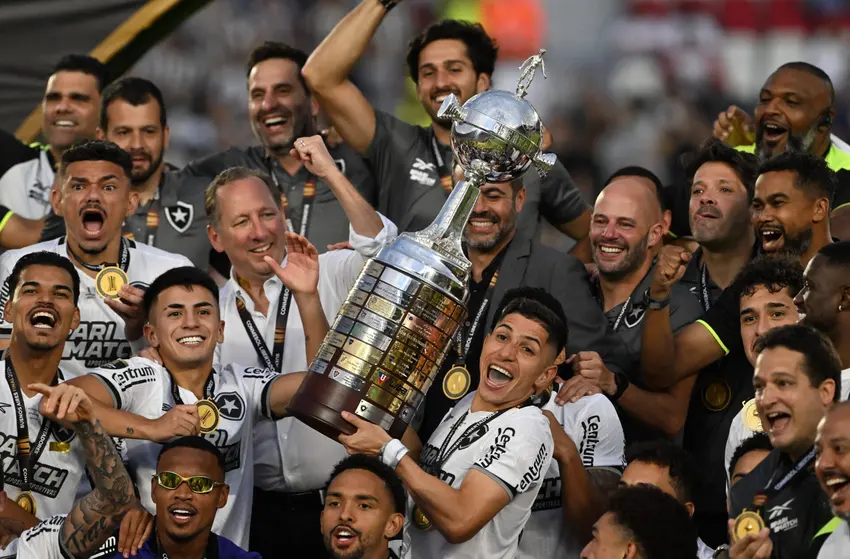
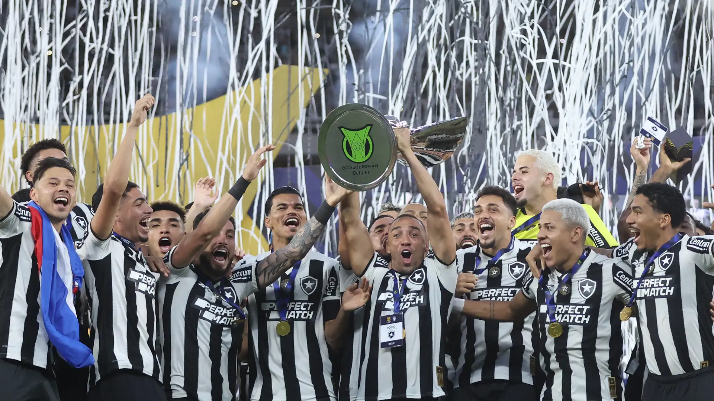
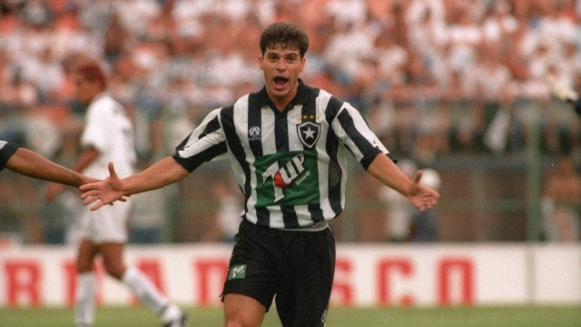
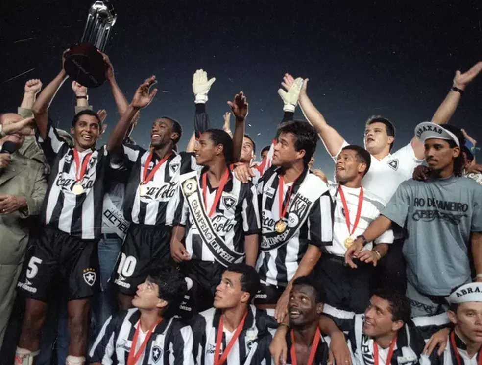
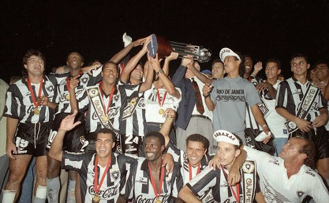
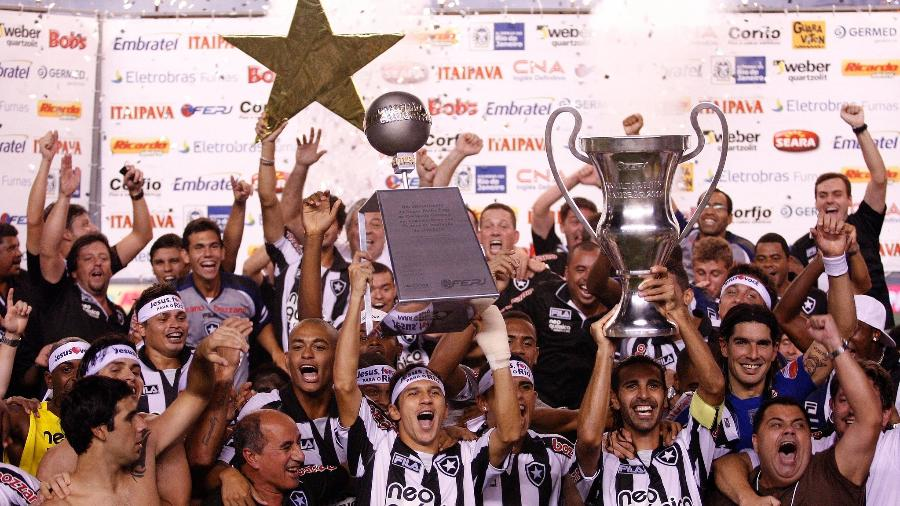

Galeria de Troféus do Glorioso
Relembre as conquistas que enchem de orgulho a Nação Alvinegra!
 CONMEBOL LIBERTADORES
Ano da Conquista: 2024.
Uma jornada épica, marcada por jogos emocionantes, superação e o talento de um time que entrou para a história. O Botafogo conquistou a América com raça e um futebol envolvente, levando a Estrela Solitária ao topo do continente.

 CAMPEONATO BRASILEIRO
Anos das Conquistas: 1968 (Taça Brasil), 1995
1968: Um esquadrão lendário, com craques como Jairzinho, Gerson e Paulo Cézar Caju, conquistou a Taça Brasil, reafirmando a força do Botafogo no cenário nacional.
1995: Comandados por Túlio Maravilha e sua incrível faro de gol, o Glorioso superou todos os adversários e levantou o troféu do Brasileirão, em uma campanha memorável.
 COPA CONMEBOL
Ano da Conquista: 1993
A primeira glória internacional oficial do Botafogo! Uma conquista histórica que abriu as portas da América do Sul para o clube e demonstrou a força do futebol alvinegro além das fronteiras brasileiras.
 CAMPEONATOS CARIOCAS
Total de Títulos: (1907, 1910, 1912, 1930, 1932, 1933, 1934, 1935, 1948, 1957, 1961, 1962, 1967, 1968, 1989, 1990, 1997, 2006, 2010, 2013 e 2018)
Uma história de domínio e tradição no futebol do Rio de Janeiro. O Botafogo coleciona inúmeros títulos estaduais, com gerações de craques que fizeram história no Maracanã e em General Severiano.
Anos de destaque: 1995 Histórico.

OUTROS TÍTULOS IMPORTANTES
- Torneio Rio-São Paulo: 1962, 1964, 1966, 1998.
- Taça Guanabara (como título separado): 1967 e 1968.
- Taça Rio (como título separado): 1996.
- Tornei Municipal: 1951.